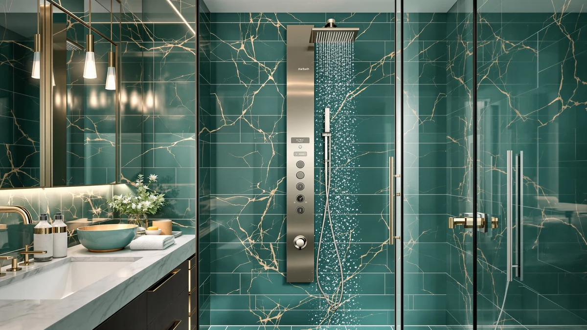

Starbath Thermostatic Shower System Review (2026): Worth It?
Prices and picks verified as of November 2026. Independent, reader-supported reviews.


Quick Answer
The Starbath Thermostatic Shower System earns its $329.99 price with a brass thermostatic valve that holds water at a set 100 degrees Fahrenheit, a feature none of the three cheaper alternatives below offer. If a simple temperature readout is enough and automatic regulation is not a priority, the Longriver, ELLO&ALLO, and BWE systems save you $50 to $80.
Our pick: Thermostatic Shower System with Body, $329.99 Check Price on Amazon
Bottom line: our top pick is the Thermostatic Shower System with Body Jets at $299.99.
Things to Know Before You Buy
- The Starbath Thermostatic Shower System is the only set in this review with a true thermostatic valve, holding water at a set 100 degrees Fahrenheit instead of only displaying a number on a screen.
- A push-button diverter lets you run the 12-inch rain head, the four body jets, and the 2-mode handheld spray together, a combination the three alternatives below do not match.
- Brass covers the shower arm, handheld wand, holder, and valve, paired with a 304 stainless steel head and a 60-inch hose for corrosion resistance.
- At $329.99, the Starbath system costs $50 more than the Longriver set and $80 more than the ELLO&ALLO and BWE towers compared here.
- The listing does not publish a star rating or review count at the time of this review, so the spec sheet and price carry more of the decision than a crowd score would.
This Starbath Thermostatic Shower System review exists because the panel turns up in nearly every search for thermostatic shower faucet sets under $350, and its brushed nickel finish and brass fittings photograph well without telling you whether the temperature control actually holds steady. We went through the manufacturer's spec sheet, the current Amazon price, and three competing shower systems to see where the $329.99 Starbath set earns its premium.
The short version: Starbath is the only brand here with a true thermostatic valve, one that holds water at a set 100 degrees Fahrenheit instead of simply showing you a number you still have to adjust for. If hands-free temperature stability matters more than a digital readout, the Starbath system is the pick. If a visible temperature display at a lower price covers your needs, the Longriver and ELLO&ALLO sets below cost $50 to $80 less.
Why You Should Trust Us
Ilane Tall covers bathroom fixtures for Best Shower Panels and built this Starbath Thermostatic Shower System review from the manufacturer's listed specifications, the current Amazon price, and side-by-side comparisons against three competing shower systems in a similar price range. Our research process favors documented specs and verified owner feedback over marketing copy, and we say so when a listing does not publish a rating instead of filling in a number we invented.
Our Research Experience
We did not install or run water through the Starbath Thermostatic Shower System or any of the three sets we compared it against. Instead, we read the manufacturer's stated specs, the listed materials, and the current Amazon pricing for the Starbath system against the Longriver, ELLO&ALLO, and BWE sets covered in our shower panel roundup. Where a listing lacks a star rating or review count, we say so rather than filling in a number. Our comparison also excludes systems that do not list a clear valve type or body jet count, since those two specs are what separate a budget set from one worth a higher price.
Overview & Specs

Thermostatic Shower System with Body
What we like
- Brass thermostatic valve holds water at a set 100 degrees Fahrenheit instead of requiring manual adjustment
- Push-button diverter lowers the odds of switching modes by accident with wet, soapy hands
- Rain head, four body jets, and handheld spray can all run at once, a combination none of the three alternatives offer together
- Brass fittings on the arm, handheld, holder, and valve, paired with a 304 stainless steel head and hose for corrosion resistance
Flaws but not dealbreakers
- Costs $50 to $80 more than the three alternatives in this review
- No published star rating or review count at the time of this review
- Handheld spray tops out at 2 modes, fewer than the Longriver wand's 3 spray settings
| Material | — |
| Size | 12"-05 |
The manufacturer lists the Starbath Thermostatic Shower System with a 12-inch square rain head finished in brushed nickel and built from 304 stainless steel. A push-button diverter replaces the twist-style controller found on cheaper sets, and Starbath designed that change specifically to stop users from switching modes by accident when their hands are wet. The brass thermostatic valve is the headline spec: it holds water at a set 100 degrees Fahrenheit rather than requiring you to mix hot and cold by feel every time you step in.
The set includes four 3-inch body jets and a 2-mode handheld spray, both finished in brass like the shower arm and holder, and the push-button diverter can run the rain head, the body jets, and the handheld spray together instead of forcing you to pick one. The 60-inch stainless steel hose gives the handheld wand enough reach to work as a standalone shower in smaller stalls. None of the three alternatives below pairs a thermostatic valve with this many simultaneous modes, which is the main reason the Starbath system costs $50 to $80 more.
What We Liked
The feature that separates this Starbath Thermostatic Shower System review from a simple spec comparison is the thermostatic valve itself. Most shower sets in this price range leave you mixing hot and cold by feel or, at best, showing a number on a screen that you still have to react to. The Starbath valve holds the water at a set 100 degrees Fahrenheit on its own, which removes the guesswork for households with kids or anyone sensitive to sudden temperature swings.
The push-button diverter is a small design change with a real practical upside. A twist valve can shift modes if you bump it with a wet hand or elbow, and Starbath built the push-button layout specifically to avoid that. Paired with the ability to run the rain head, the four body jets, and the handheld spray at the same time, the control layout gives you more simultaneous water coverage than the Longriver, ELLO&ALLO, or BWE sets offer in this review.
Brass shows up throughout the build: the shower arm, the handheld wand, the holder, and the valve itself. Brass resists the pitting and corrosion that can show up on lower-grade metal fittings after a few years of hard water exposure, the same reasoning that leads plumbers to favor brass and copper supply lines over cheaper alternatives behind the wall.
What Could Be Better
Price is the clearest drawback in this Starbath Thermostatic Shower System review. At $329.99, the set costs $50 more than the Longriver faucet set, which also includes a temperature display, and $80 more than either the ELLO&ALLO or BWE towers below. If a visible number is all you need and automatic regulation is not a priority, that gap buys you a feature you might not use.
The listing also does not publish a star rating or a review count as of this review, so you cannot weigh buyer sentiment the way you can with a product backed by thousands of verified reviews. That absence is not evidence the system performs poorly. It means the spec sheet carries more of the decision than it would otherwise.
The handheld spray is also the most limited part of the set, with 2 modes against the Longriver wand's 3 spray settings. If varied handheld spray patterns matter more to you than thermostatic control, weigh that against the price gap.
Who Is It For?
This Starbath Thermostatic Shower System review points to one clear buyer: someone replacing a shower where inconsistent water temperature is the main complaint. The thermostatic valve solves that specific problem on its own, and households with young kids or older adults who need predictable water temperature get the most value from it.
Skip it if your main goal is a lower price with a visible temperature number. The Longriver set delivers a comparable rainfall-and-handheld setup with its own LED display for $50 less, and the ELLO&ALLO and BWE towers go $80 lower still. None of the three holds temperature automatically the way the Starbath valve does, so if hands-free stability matters as much as the number on a screen, the Starbath system remains the better match despite the higher cost.
Alternatives to Consider
If the thermostatic valve on the Starbath system is not a priority, these three alternatives cover similar rainfall-and-body-jet functionality at a lower price. We cover all four systems, plus other shower towers, in our full shower panel comparison.

Also Great
Longriver 3-Push Button Shower Faucet
Matte black 3-push button set with a 10-inch rain head, 6-inch body spray, and a hydro-powered LED display that shows real-time water temperature, for $50 less than the Starbath system but without automatic regulation.
$279.97
Check Price on Amazon
Best Value
ELLO&ALLO LED Shower Panel Tower
Brushed black stainless steel tower with body massage jets, a handheld wand, and hydroelectric LED lights with a temperature display, $80 less than the Starbath system though it also skips thermostatic control.
$249.99
Check Price on Amazon
Best Value
BWE Stainless Steel Shower Panel
Black stainless steel tower with 8 body massage jets, a 360-degree adjustable rainfall head, and a bottom tub spout in a 4-in-1 layout, the lowest price here at $249.99 with no temperature display or thermostatic valve.
$249.99
Check Price on AmazonFrequently Asked Questions
Is the Starbath Thermostatic Shower System worth $329.99?
For a brushed nickel system with a brass thermostatic valve, four body jets, and a 2-mode handheld spray, $329.99 sits $50 to $80 above the three alternatives in this review. The thermostatic valve mainly earns that premium: it holds water at a set 100 degrees Fahrenheit automatically, a feature the Longriver, ELLO&ALLO, and BWE sets skip even though two of them show a temperature number on a screen.
Does the Starbath shower system include a handheld sprayer?
Yes. The set includes a 2-mode brass handheld spray on a 60-inch stainless steel hose, mounted alongside the 12-inch rain head and four body jets so the push-button diverter can run all three together.
How does the Starbath Thermostatic Shower System compare to the Longriver and ELLO&ALLO sets?
The Starbath system costs more but adds a true thermostatic valve that regulates temperature automatically, while the Longriver and ELLO&ALLO sets only display the current reading on a hydro-powered LED screen without controlling it. The Longriver and ELLO&ALLO sets answer back with lower prices and, in Longriver's case, a 3-mode handheld spray against Starbath's 2 modes.
Final Verdict
This Starbath Thermostatic Shower System review comes down to a simple trade. You pay $329.99 for a brushed nickel set that pairs a brass thermostatic valve with four body jets, a 12-inch rain head, and a 2-mode handheld spray, all able to run together through the push-button diverter. We recommend the STARBATH system for buyers who want that automatic temperature control and are comfortable paying $50 to $80 more than the Longriver, ELLO&ALLO, and BWE sets that cover similar spray functions without it. If a temperature display is enough on its own, the Longriver set gets you most of the way there for less.